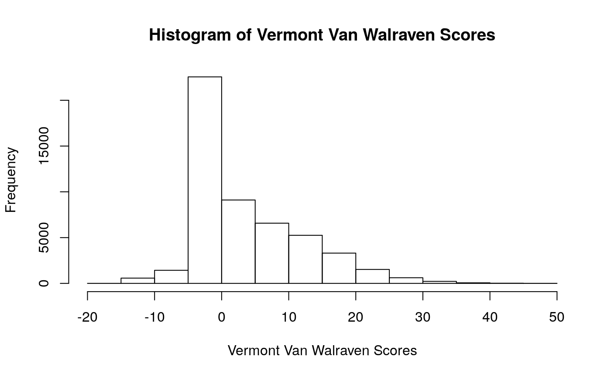

vignettes/charlson-scores.Rmd
charlson-scores.RmdA common use of ICD codes is calculation as a Charlson score, which gives a measure of how well a patient is, albeit based on the limited available in admission and discharge diagnoses. The Charlson scoring system attributes scores based on presence of diseases falling into any of the Charlson comorbidities. Quan updated the scores given to each comorbidity to better reflect morbidity and mortality in a more recent population. Van Walraven provides a similar scoring methodology for the Elixhauser comorbidities (as used by the US AHRQ).
More complicated scoring systems may use lab values, patient demographic information, and so on. Any contributions to this package for calculations of scoring systems based on comorbidities and other data would be welcome.
The Vermont data are actually discharge, not admission diagnoses, but can be used to demonstrate generating Charlson scores.
head(vermont_dx[1:10]) #> visit_id age_group sex death DRG DX1 DX2 DX3 DX4 DX5 #> 1 7 40-44 male TRUE 640 27801 03842 51881 41519 99591 #> 2 10 75 and over female FALSE 470 71526 25000 42830 4280 4019 #> 3 13 75 and over female FALSE 470 71535 59651 78052 27800 V8537 #> 4 16 55-59 female FALSE 470 71535 49390 53081 27800 V140 #> 5 37 70-74 male FALSE 462 71536 4241 2859 2720 4414 #> 6 41 70-74 male FALSE 462 71536 V1259 V1582 V160 V171 vch <- charlson(vermont_dx) summary(vch) #> Min. 1st Qu. Median Mean 3rd Qu. Max. #> 0.000 0.000 1.000 1.573 2.000 9.000 head(vch) #> 7 10 13 16 37 41 #> 5 3 0 1 1 0 head(names(vch)) #> [1] "7" "10" "13" "16" "37" "41"
This default result is a numeric vector with the names (top numbers) as the patient identifiers. Those who like working with ‘tidy’ data frames can use:
head(charlson(vermont_dx, return_df = TRUE)) #> visit_id Charlson #> 1 7 5 #> 2 10 3 #> 3 13 0 #> 4 16 1 #> 5 37 1 #> 6 41 0
Behind the scenes, icd calculates the Charlson comorbidities for those ICD codes, applies the Charlson scoring system, and returns the Charlson score for each patient.
The same principle can be used to calculate the Van Walraven score, which is the Charlson score counterpart for Elixhauser comorbidities.
`Vermont Van Walraven Scores` <- van_walraven(vermont_dx) hist(`Vermont Van Walraven Scores`)

All the functions in icd work with one code type. They are tolerant of having different sub-types of ICD-9 or ICD-10 codes together for comorbidity calculations, but patients with mixed data can be combined. E.g. patient A has two ICD-9 and two ICD-10 codes:
icd9 <- data.frame(pts = c("A", "A"), c("041.04", "244.9")) icd10 <- data.frame(pts = c("A", "A"), c("C82.28", "M08.979")) both <- comorbid_elix(icd9) | comorbid_elix(icd10) van_walraven_from_comorbid(both) #> A #> 9
More commonly, some patients before a certain date will have ICD-9 codes, and others will have ICD-10 codes:
icd9 <- data.frame(pts = c("A", "A"), c("041.04", "244.9")) icd10 <- data.frame(pts = c("B", "B"), c("C82.28", "M08.979")) both <- rbind(comorbid_elix(icd9), comorbid_elix(icd10)) van_walraven_from_comorbid(both) #> A B #> 0 9